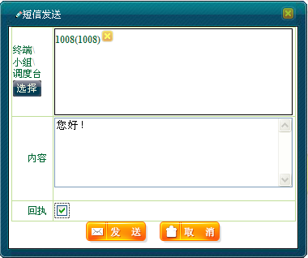
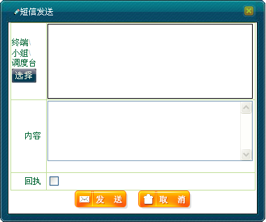

调度员可以通过信息管理器发送和接收短信息，同时系统会对这些消息产生消息日志。
在本节，主要介绍通过地图右键选中移动用户发送个人短信，以及通过“调度功能”下的“呼叫面板”发送个人短信两种方法。其余操作方法类似。
1）在地图上选中移动用户。
2）右键单击［短信业务/个人短信］，弹出“短信发送”对话框。
3）调度员可根据实际需要是否添加其他用户以及是否请求回执等，如下图1所示。

图1. 发送个人短信
4）单击＜发送＞按钮进行发送。
5）短信发送成功后，在系统下方的消息日志中会显示相关信息，如：“［发送（短信）］发送成功（1008（1008））［10:01:18］”。
1）在系统操作菜单栏中单击［调度功能/呼叫面板］，弹出“呼叫面板”对话框。
2）单击“消息业务”模块中的“短信”，弹出“短信发送”对话框，如下图2所示。

图2. 短信发送对话框
3）在“终端\小组\调度台”下方单击＜选择＞按钮，弹出选择用户对话框。在左侧成员树中选择一个或多个移动用户，或者在右侧的“请输入终端标识或小组标识”对话框中输入终端标识，单击＜新增＞按钮。
4）单击＜确定＞完成用户添加。
5）调度员可根据实际需要添加短信内容以及是否请求回执等。
6）单击＜发送＞按钮进行发送。短信发送成功后，在系统下方的消息日志中会有成功发送的记录。
若调度台收到其他用户发来的短消息，则在“消息”日志中会显示收到的短信内容及发送方标识号。例如：“［接收（短信）］1008（1008）：警报［10:32:35］”。
| 参数名称 | 描述 | 类型 | 缺省值 |
| 终端/小组/调度台 | 发送方或接收方（终端/小组/调度台）标识号 |
1～13999999 |
N/A |
| 内容 | 短信内容 |
0～70个汉字，字符数不超过140个 |
N/A |
| 回执 | 选择是否请求回执，若发送成功，则在“消息”日志中会有短信已读的记录 |
通过在回执右侧是否打勾选择 |
不要回执 |
 说明：
说明：
若消息发送失败，在“消息”日志栏中会显示相应的信息。
Copyright © 2012 Eastcom, Inc. All rights reserved. |
||